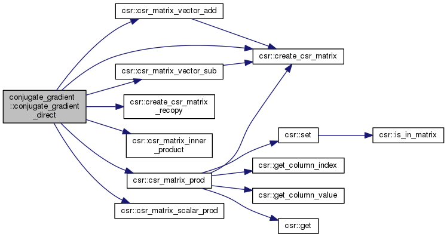
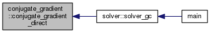

Ce module permet d'utiliser l'algorithme du gradient conjugué. Deux implémentations sont fournies, la première effectue le nombre maximal d'étape, la seconde s'arrête à une précision donnée. Plus de détails...
Fonctions/Subroutines | |
| type(csr_matrix) function | conjugate_gradient_direct (A, B, eps) |
Résouds le système  en utilisant la méthode du gradiant conjugué Source https://www.ljll.math.upmc.fr/hecht/ftp/InfoSci/doc-pdf/Master_book_GC.pdf. Plus de détails... en utilisant la méthode du gradiant conjugué Source https://www.ljll.math.upmc.fr/hecht/ftp/InfoSci/doc-pdf/Master_book_GC.pdf. Plus de détails... | |
Description détaillée
Ce module permet d'utiliser l'algorithme du gradient conjugué. Deux implémentations sont fournies, la première effectue le nombre maximal d'étape, la seconde s'arrête à une précision donnée.
Documentation de la fonction/subroutine
◆ conjugate_gradient_direct()
| type(csr_matrix) function conjugate_gradient::conjugate_gradient_direct | ( | type(csr_matrix), intent(in) | A, |
| type(csr_matrix), intent(in) | B, | ||
| real, intent(in), optional | eps | ||
| ) |
Résouds le système en utilisant la méthode du gradiant conjugué Source https://www.ljll.math.upmc.fr/hecht/ftp/InfoSci/doc-pdf/Master_book_GC.pdf.
- Paramètres
-
A Matrice CSR B Matrice CSR représentant un vecteur colonne eps Précison requise (Optionel)
- Renvoie
- Approximation, dans le pire des cas, de la solution du système
Voici le graphe d'appel pour cette fonction :

Voici le graphe des appelants de cette fonction :
